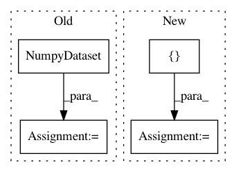

2ef0e4b77a137e13d5cdfa635aef3d80959a47bd,deepchem/hyper/tests/test_gaussian_hyperparam_opt.py,TestGaussianHyperparamOpt,test_rf_example,#TestGaussianHyperparamOpt#,15
Before Change
train_dataset = dc.data.NumpyDataset(
X=np.random.rand(50, 5), y=np.random.rand(50, 1))
valid_dataset = dc.data.NumpyDataset(
X=np.random.rand(20, 5), y=np.random.rand(20, 1))
optimizer = dc.hyper.GaussianProcessHyperparamOpt(rf_model_builder)
params_dict = {"n_estimators": 10}
transformers = [
dc.trans.NormalizationTransformer(
After Change
metric,
max_iter=2)
valid_score = best_model.evaluate(self.valid_dataset, [metric],
transformers)
assert valid_score["pearson_r2_score"] > 0
def test_rf_with_logdir(self):
Test that using a logdir can work correctly.
In pattern: SUPERPATTERN
Frequency: 3
Non-data size: 4
Instances
Project Name: deepchem/deepchem
Commit Name: 2ef0e4b77a137e13d5cdfa635aef3d80959a47bd
Time: 2020-07-02
Author: bharath@Bharaths-MBP.zyxel.com
File Name: deepchem/hyper/tests/test_gaussian_hyperparam_opt.py
Class Name: TestGaussianHyperparamOpt
Method Name: test_rf_example
Project Name: deepchem/deepchem
Commit Name: bcef53fdba799a4c6a250c9d0d67a30db4696ee5
Time: 2020-08-24
Author: nfrey213@gmail.com
File Name: deepchem/models/tests/test_normalizing_flows.py
Class Name:
Method Name: test_normalizing_flow
Project Name: deepchem/deepchem
Commit Name: dc4eba996e003be0331cd78e7ba7c477f30f4e67
Time: 2018-05-23
Author: peastman@stanford.edu
File Name: deepchem/utils/test/test_generator_evaluator.py
Class Name: TestGeneratorEvaluator
Method Name: test_compute_model_performance_multitask_classifier